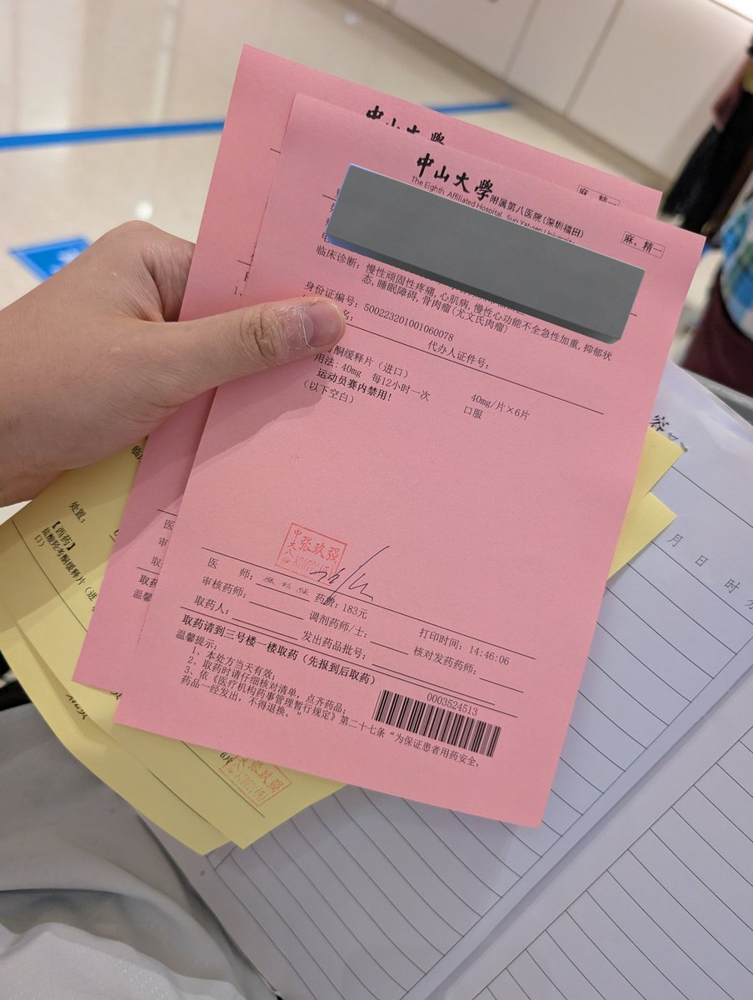
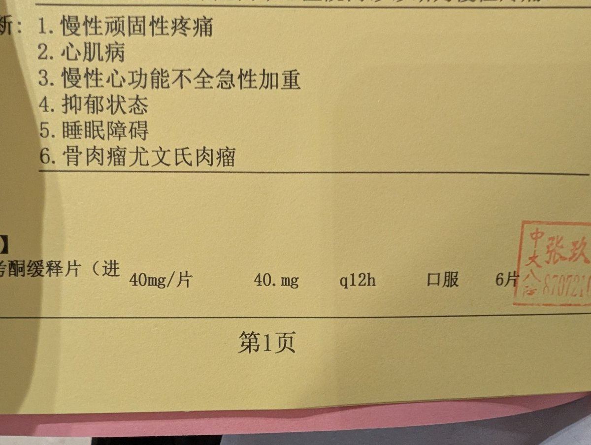

洛铃🦊Magic Caster
@LolingVerse
于是便推着水素前往取药窗口，因为麻药有专门通道，便不需要排队了。
负责发药的是一个头发稍长的男子，性格温和，咱对他的印象还好——因为他给了我们完好的药盒，就可以满足收集癖了


Yekase Suiso🍨🍥
@YekaseSuiso2022
前几天才刚去中大附八（）
奥斯康定也是点击就送，目前来看药房也不会随便打回，感觉下次可以问一下有没有专注达，有的话顺便刷了 https://t.co/0XXT5d2gmk https://t.co/HzgTp5K1lA